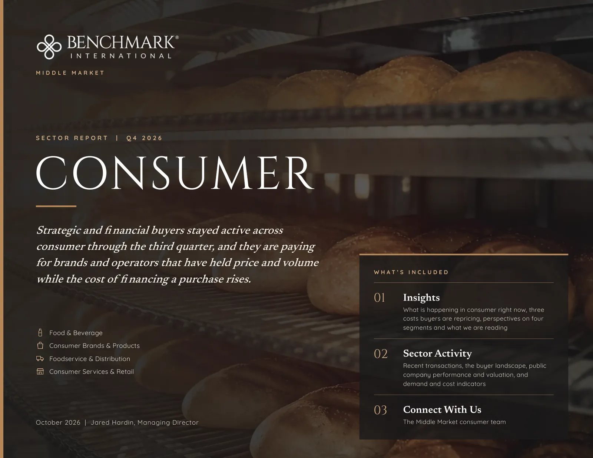
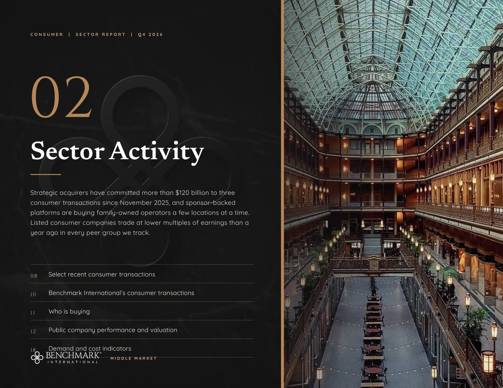
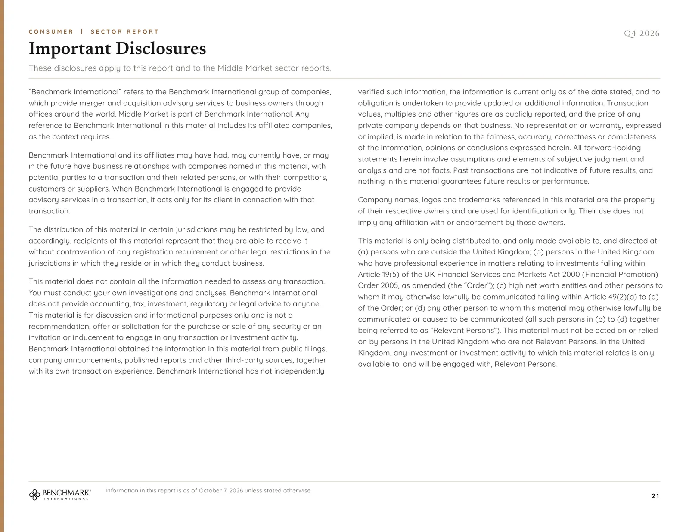

This is the Consumer Q4 2026 sector brief, page by page, exactly as it appears in the PDF. Links on each page open their sources, and the text of every page, with its tables and chart data, is below each page.

Read the text of this page
BENCHMARK CAPITAL MARKETS
QUARTERLY SECTOR BRIEF | Q4 2026
CONSUMER
Strategic and financial buyers stayed active across consumer through the third quarter, and they are paying for brands and operators that have held price and volume while the cost of financing a purchase rises.
Food & Beverage
Consumer Brands & Products
Foodservice & Distribution
Consumer Services & Retail
WHAT’S INCLUDED
Insights
What is happening in consumer right now, three costs buyers are repricing, perspectives on four segments and what we are reading
Sector Activity
Recent transactions, the buyer landscape, public company performance and valuation, and demand and cost indicators
Connect With Us
October 2026 | Jared Hardin, Managing Director
The Benchmark Capital Markets consumer team
Read the text of this page
CONSUMER | QUARTERLY SECTOR BRIEF | Q4 2026
Buyers of consumer businesses are paying for brands that have held price and volume, for companies that sell through more than one channel and for operators with room to add distribution or locations. They have stayed active while tariffs, fuel and interest rates have each changed what a buyer treats as normal earnings.
Happening in consumer right now
Tariffs, fuel and financing: three costs buyers are repricing
Perspectives on four consumer segments
What we’re reading
BENCHMARK CAPITAL MARKETS
Read the text of this page
Four developments shaping the market, each with what the management of a listed company said about it in its latest results.
WHAT IT MEANS FOR OWNERS
Buyers are paying for brands and operators that have held price and volume, that sell through more than one channel and that have room to add distribution or locations.
An owner who can show price increases by product or service line, with unit volume and customer retention beside them, gives a buyer the evidence that supports a higher valuation.
Brands are being sorted by whether volume follows price
Hershey’s organic sales rose 3.6% in the second quarter on about 12 points of price and an 8-point decline in volume, while Church & Dwight grew organic sales 5.8% with volume up 4.3% (Hershey; Church & Dwight). General Mills reported flat organic sales with volume down a point, and store brands reached a record 23.8% of units sold in the first half (General Mills; PLMA).
“Our power brands continued to perform exceptionally well in a challenging macroeconomic environment, driving a second straight quarter of industry-leading organic sales growth.”
Rick Dierker, Chief Executive Officer, Church & Dwight
Growth is arriving through more than one channel
E-commerce reached $340.2 billion in the second quarter, or 17.1% of retail sales, and Walmart’s global e-commerce sales grew 23% in its July quarter (Census Bureau; Walmart). YETI grew wholesale sales 10% and direct-to-consumer sales 7% in its second quarter, and General Mills’ foodservice business grew organic sales 4% while the company’s total organic sales were flat (YETI; General Mills).
“We also saw continued progress across our omni-channel model, including strong wholesale sell-through, healthy DTC demand and improving trends in Corporate Sales.”
Matt Reintjes, Chair of the Board and Chief Executive Officer, YETI
Strategic acquirers are reshaping portfolios at scale
Kimberly-Clark, McCormick and Sysco have committed more than $120 billion to three transactions since November 2025 (Kenvue; Unilever’s food business; Jetro Restaurant Depot). The largest companies are also selling and separating businesses: General Mills completed the sale of its Brazil business on September 2, Keurig Dr Pepper is preparing to separate in early 2027, and Middleby spun off its food processing business in July (General Mills; Keurig Dr Pepper; Middleby).
“We remain confident in the strategic benefits of the proposed combination with Unilever Foods and have made substantial progress on integration planning.”
Brendan M. Foley, Chairman, President and CEO, McCormick
Multi-site platforms keep adding locations
Add-on acquisitions made up about 75% of US private equity buyouts in the second quarter (PitchBook). Boyd Group’s second-quarter sales rose 29.9%, mostly from new locations that include the 258 Joe Hudson’s collision centers it bought in January, Tidal Wave Auto Spa reached 332 car wash locations in September, and SPS PoolCare had completed 191 acquisitions since 2021 by January (Boyd Group; Tidal Wave Auto Spa; SPS PoolCare).
“We also successfully completed the conversion of Joe Hudson’s 258 locations during the quarter, accelerating synergy realization, which contributed to the strength in our profitability.”
Brian Kaner, President & CEO, Boyd Group
Company figures and quotations are from quarterly earnings releases filed between July 30 and October 1, 2026, and quotations are reproduced as published. Store brand share is Circana data for the six months to June 14, 2026. Platform location and acquisition counts are from the linked announcements.
Read the text of this page
Tariffs, fuel and interest rates have each moved in the past year, and each changes what a buyer will treat as normal earnings.
A consumer company that reaches the market in the next year will present earnings that passed through three tariff regimes, a fuel shock and the first increase in the federal funds rate since 2023. Buyers are rebuilding each of those costs period by period before they settle on the earnings they will pay for.
The effect differs from one company to the next. YETI recorded a $45.6 million net benefit from tariff refunds in its second quarter and Walmart said it reinvested its refunds into price, while 91% of the foodservice equipment manufacturers surveyed by their trade association reported negative effects from tariffs and 78% said they were passing the cost on to customers.
An owner who can hand a buyer landed cost by period, fuel recovery by contract and a clear account of how the business is financed shortens diligence and protects the earnings figure the price is built on.
WHAT BUYERS ARE REBUILDING
Tariffs
The Supreme Court held on February 20 that the International Emergency Economic Powers Act does not authorize tariffs, a temporary 10% tariff followed, and since July 24 Section 301 tariffs of 10% to 12.5% apply to 60 trading partners. Section 232 duties stayed in place, including 25% on upholstered furniture, and duty-free treatment for parcels under $800 remains suspended.
WHAT BUYERS ASK FOR Landed cost under each regime, the status of any refund claim and the sourcing alternatives the company has already qualified.
Fuel
On-highway diesel averaged $6.29 a gallon in September against $3.75 a year earlier (FRED). The Energy Information Administration’s October outlook expects retail diesel to average about $4.50 next year, which would still be well above the price distributors and route-based service companies paid a year ago.
WHAT BUYERS ASK FOR Which customer contracts carry fuel surcharges or cost escalators, how quickly they reset and how much of the increase the company has recovered.
Financing
The Federal Reserve raised its target range to 3.75% to 4.00% on September 16 and projects a policy rate of 4.1% at the end of 2026 and 2027. Spreads on direct loans for buyouts widened by roughly 25 to 50 basis points in the second quarter, and earn-outs appeared in 24% of 2025 transactions with a median equal to 34% of the closing payment (SRS Acquiom study, as summarized by Fasken).
WHAT BUYERS ASK FOR How much of the price is paid in cash at closing, how much is contingent and how much is rolled into the buyer’s equity.
THE REPRICING IN FOUR FIGURES
12.5%
Section 301 tariff on goods from China and Vietnam since July 24
$6.29
Diesel per gallon, September average, against $3.75 a year earlier
3.75% to 4.00%
Federal funds target range after the September 16 increase
24%
Share of 2025 transactions that included an earn-out
Buyers who finance with debt carry the higher rate into their models, which favors sellers whose earnings are growing.
Tariff rates are as described in the linked sources. Diesel is the monthly average US on-highway retail price published by the Energy Information Administration. Earn-out figures are from the SRS Acquiom 2026 deal terms study of 2025 transactions.
Read the text of this page
What is moving demand, and who is buying, in each of the segments the consumer practice covers.
Food & Beverage
23.8%
Store brand share of units sold in the first half of 2026
The largest packaged food companies report flat or falling volume, and they are selling slow brands and buying growth and capacity from smaller companies (General Mills; Conagra).
Growth is in protein, zero-sugar beverages, supplements and foodservice, and Procter & Gamble agreed to buy Thorne in a deal reportedly valued at $3.8 billion.
National distributors are growing case volume with independent restaurants, up 5.1% at US Foods and 5.8% organically at Performance Food Group.
WHO IS BUYING
Family-owned strategics such as Rich Products, Sargento and C.H. Guenther, bakery consolidators, private equity platforms and European strategics entering the United States.
BENCHMARK INTERNATIONAL
4
closed since January 2025
27
live engagements
Consumer Brands & Products
7%
Growth in both prestige and mass beauty sales in the first half of 2026
Beauty, personal care, over-the-counter health and pet products drew a large share of this year’s brand acquisitions, and beauty and pet spending are still growing (Circana; American Pet Products Association).
Dollar growth overstates unit demand: non-edible packaged goods rose 3.1% in dollars and fell 2.2% in units in June (Circana).
Importers have carried three tariff regimes since April 2025, and packaging producer-responsibility rules took effect in California on May 1.
WHO IS BUYING
Strategics such as Procter & Gamble, Clorox and Henkel, consumer private equity firms such as Advent, TSG and TowerBrook, and brand-management firms.
BENCHMARK INTERNATIONAL
2
closed since January 2025
12
live engagements
Foodservice & Distribution
$1.55T
Restaurant and foodservice sales forecast for 2026
Operators are spending carefully: sales of equipment and supplies through manufacturers’ agents rose 2.0% in the second quarter, and the share of agents reporting more quoting fell to 33%.
Franchisee distress is the credit risk in the channel. A 314-unit Wendy’s franchisee filed for Chapter 11 in September after store-level EBITDA fell 48%.
Parts, repair, ice and refreshment route businesses changed hands all year (Parts Town; Easy Ice).
WHO IS BUYING
Strategic dealers such as Singer and Wasserstrom, parts and service platforms such as Parts Town and Tech24, and route platforms such as Five Star Breaktime Solutions.
BENCHMARK INTERNATIONAL
6
closed since January 2025
5
live engagements
Consumer Services & Retail
$3.1B
Enterprise value of the Mister Car Wash take-private completed in May
Sponsors paid for scale: Leonard Green took Mister Car Wash private and Blackstone agreed to buy Champions Group for about $2.5 billion.
Platforms buy family-owned operators a few locations at a time, as when Classic Collision bought Kendrick Paint & Body, a nine-location business family-owned since 1952.
Housing-linked demand softened through the summer, and growth in home improvement spending is projected to slow to 0.5% by the second quarter of 2027.
WHO IS BUYING
Sponsor-backed platforms in car wash, collision, roofing, pool and garage door service, public acquirers such as Rollins and Boyd Group, and regional strategics.
BENCHMARK INTERNATIONAL
20
closed since January 2025
66
live engagements
Benchmark International counts are from the firm’s transaction records as of October 1, 2026. Store brand share is from the Private Label Manufacturers Association, the restaurant sales forecast from the National Restaurant Association and beauty sales from Circana.
Read the text of this page
Primary sources and industry releases from the third quarter.
Four pieces from the quarter
Each bears on how consumer businesses are valued and sold, and each is shown with the passage we marked and the reason it matters to an owner.
USDA ECONOMIC RESEARCH SERVICE
September 25, 2026
Food Price Outlook: Summary Findings
“In 2026, prices for all food are forecast to increase 2.9 percent, with a forecast interval of 2.5 to 3.2 percent.”
USDA Economic Research Service, Food Price Outlook
Key takeaway. Food-at-home prices are forecast to rise 2.4% and food-away-from-home prices 3.5%, with beef and veal up 9.4% and eggs down 29.4%. Input costs are moving in different directions by category, which is why buyers ask for price and cost history by product line.
READ HERE
PRIVATE LABEL MANUFACTURERS ASSOCIATION
July 8, 2026
Store Brands Continue Gains in Unit Sales and Shares
“The disconnect between unit sales and dollar sales reflects, in part, fluctuating national brand pricing.”
Peggy Davies, President, Private Label Manufacturers Association
Key takeaway. Store brand unit share reached a record 23.8% in the six months to mid-June, while store brand dollar sales were flat and national brand dollars rose 2.2%. Buyers pay for brands that hold unit volume while they raise price.
READ HERE
NATIONAL RESTAURANT ASSOCIATION
September 30, 2026
Restaurant Performance Index: August 2026
“The National Restaurant Association’s Restaurant Performance Index (RPI) rose for the fourth consecutive month in August, largely because of improvements in both same-store sales and customer traffic levels.”
National Restaurant Association, Restaurant Performance Index
Key takeaway. The index stood at 100.6, with 51% of operators reporting higher same-store sales than a year earlier and 46% still reporting lower traffic. Distributors and equipment dealers that sell to restaurants are valued partly on the health of those customers.
READ HERE
DELOITTE
September 10, 2026
Deloitte Forecasts Holiday Retail Sales to Reach $1.70 Trillion to $1.71 Trillion
“As they look to get more out of their dollars, we continue to see value-seeking behaviors across income levels, including switching among brands and retailers and using promotions to manage spending.”
Natalie Martini, vice chair, Deloitte, and US retail and consumer products leader
Key takeaway. Holiday sales are forecast to rise 4.0% to 4.8% and e-commerce sales 7.5% to 8.4%. Online sales growing at nearly twice the pace of the total keeps channel mix in front of every buyer of a consumer brand.
READ HERE
Quotations are reproduced as published. Store brand figures are Circana data for the six months ending June 14, 2026. The Deloitte forecast covers November 2026 through January 2027.

Read the text of this page
CONSUMER | QUARTERLY SECTOR BRIEF | Q4 2026
Strategic acquirers have committed more than $120 billion to three consumer transactions since November 2025, and sponsor-backed platforms are buying family-owned operators a few locations at a time. Listed consumer companies trade at lower multiples of earnings than a year ago in every peer group we track.
Select recent consumer transactions
10
Benchmark International’s consumer transactions
11
Who is buying
12
Public company performance and valuation
18
Demand and cost indicators
BENCHMARK CAPITAL MARKETS
Read the text of this page
Acquirers disclosed a price in most of these transactions and a multiple of earnings in only a few.
ANNOUNCED
TARGET AND ACQUIRER
BUSINESS AND TERMS
STATED VALUE
VALUE TO REVENUE
VALUE TO EARNINGS
SEPT 2026
FOOD & BEVERAGE
BRAKEBUSH BROTHERS
ACQUIRED BY
HORMEL FOODS
Hormel agreed on September 30 to acquire Brakebush Brothers, a producer of prepared chicken (Hormel and Brakebush Brothers).
About $1.06B
JULY 2026
FOOD & BEVERAGE
SEARAY FOODS
ACQUIRED BY
HF FOODS
HF Foods agreed to acquire Searay Foods, a distributor of frozen specialty seafood, expected the purchase to close in the third quarter and stated the price as a multiple of projected adjusted EBITDA (HF Foods and Searay Foods).
C$47.9M
Not disclosed
5.0x
projected 2025 adjusted EBITDA, as stated by HF Foods
JULY 2026
FOOD & BEVERAGE
COPRA INC.
ACQUIRED BY
VITA COCO
Vita Coco acquired Copra, a privately held producer of frozen organic coconut water and coconut meat (Vita Coco and Copra).
$175M
Not disclosed
JAN 2026
CONSUMER BRANDS & PRODUCTS
GOJO INDUSTRIES
ACQUIRED BY
CLOROX
Clorox bought GOJO Industries, the maker of Purell, which had been family-led in Akron, Ohio since its founding in 1946 (Clorox and GOJO Industries).
$2.25B
Not disclosed
MAR 2026
CONSUMER BRANDS & PRODUCTS
BREATHE RIGHT, DIMETAPP AND ANBESOL
ACQUIRED BY
PRESTIGE CONSUMER HEALTHCARE
Prestige agreed to buy Breathe Right and other over-the-counter health brands, described the model as asset-light and stated the price as a multiple of EBITDA (Prestige Consumer Healthcare).
$1.045B
Not disclosed
11.0x
EBITDA, as stated by Prestige
JAN 2026
CONSUMER BRANDS & PRODUCTS
MY MEDIC
ACQUIRED BY
ACME UNITED
Acme United bought My Medic, a maker of first-aid kits sold almost entirely direct to consumers, with about $19 million of revenue (Acme United and My Medic).
$18.7M
About 1.0x
calculated from the stated figures
Not disclosed
About 0.9x
calculated from the stated figures
10.7x
projected CY2026 adjusted EBITDA, as stated by Hormel
11.9x
Adjusted EBITDA net of anticipated tax benefits, as stated by Clorox
Values and multiples are as stated by the acquirer or reported in the linked source. Value to revenue is our calculation where marked. Company names are the property of their owners and are used for identification. Transactions advised by Benchmark International appear on page 10.
Read the text of this page
Buyers in foodservice and consumer services paid for store networks, subscription members and recurring customer contracts.
ANNOUNCED
TARGET AND ACQUIRER
BUSINESS AND TERMS
STATED VALUE
VALUE TO REVENUE
VALUE TO EARNINGS
MAR 2026
FOODSERVICE & DISTRIBUTION
JETRO RESTAURANT DEPOT
ACQUIRED BY
SYSCO
Sysco agreed to acquire Jetro Restaurant Depot and its 166 cash-and-carry warehouse stores, and it expects to close by the first calendar quarter of 2027 while members of Congress have asked the FTC to investigate (Sysco and Jetro Restaurant Depot).
About $29.1B
enterprise value
Not disclosed
14.6x
2025 operating income, as stated by Sysco
MAR 2026
FOODSERVICE & DISTRIBUTION
FEDERAL INDUSTRIES
ACQUIRED BY
AERITEK
Mill Point Capital
AeriTek bought Federal Industries, a Wisconsin maker of food display cases with $35.7 million of fiscal 2025 revenue, in a carve-out from Standex (Standex on Federal Industries).
About $70M
enterprise value
About 2.0x
calculated from the stated figures
Not disclosed
APR 2026
FOODSERVICE & DISTRIBUTION
BRESCO
ACQUIRED BY
SINGER EQUIPMENT CO.
Singer acquired Bresco, a family-led foodservice equipment and supplies dealer in Birmingham, Alabama with $39.3 million of 2025 sales (Singer Equipment and Bresco). Dealer acquirers rarely disclose price.
Not disclosed
FEB 2026
CONSUMER SERVICES & RETAIL
MISTER CAR WASH
ACQUIRED BY
LEONARD GREEN & PARTNERS
Leonard Green agreed in February to take Mister Car Wash private at $7.00 per share and completed the purchase on May 19, when the company had about 550 locations and about 2.5 million subscription members (Mister Car Wash and Leonard Green; Mister Car Wash results).
$3.1B
enterprise value
MAR 2026
CONSUMER SERVICES & RETAIL
GUILD GARAGE GROUP
ACQUIRED BY
OAK HILL CAPITAL
Oak Hill agreed to buy Guild Garage Group, a two-year-old platform assembled from nearly 30 garage door companies, which reportedly generates revenue above $300 million and EBITDA close to $50 million, at a price PitchBook News described as 16 times EBITDA (Oak Hill and Guild Garage Group).
$800M+
as reported
Not disclosed
16x
EBITDA, as described by PitchBook News
APR 2026
CONSUMER SERVICES & RETAIL
ROMEX PEST CONTROL
ACQUIRED BY
ROLLINS
Rollins acquired Romex Pest Control, a Utah company founded in 2016, and allocated about 89% of the price to customer contracts and goodwill (Rollins and Romex Pest Control; Rollins quarterly filing; PCT Top 100)
$95.7M
Calculated from
PCT top 100
revenues 2025
Not disclosed
2.9x
8.9x
Calculated from full year 2025 Mister Car Wash financials
2.7x
Values and multiples are as stated by the acquirer or reported in the linked source. Value to revenue is our calculation where marked. Three transactions are shown for each of the four segments on pages 08 and 09.
Read the text of this page
Consumer services and retail is the most active segment, and operating companies and platforms bought just over half of the named companies.
SINCE JANUARY 2025
32
consumer transactions closed in the four segments
110
consumer engagements in progress as of October 1, 2026
9 of 17
named acquirers were operating companies or platforms adding to an existing business
Ranked the leading privately owned sell-side M&A advisor in the world in PitchBook’s Q2 2026 Global League Tables (Benchmark International).
BY SEGMENT
Closed
In progress
Food & Beverage
4
27
Consumer Brands & Products
2
12
Foodservice & Distribution
6
5
Consumer Services & Retail
20
66
WHO BOUGHT THE 17 NAMED COMPANIES
Operating companies and platforms adding to an existing business
9
Private equity and private investment firms
6
Individual and entrepreneur-led buyers
2
ANNOUNCED ENGAGEMENTS, BY MONTH OF ANNOUNCEMENT
SEPT 2026
CONSUMER SERVICES & RETAIL
GILCO RESTORATION
Fire and water damage restoration, Williamsburg, VA
ACQUIRED BY Thomasville Restoration
SEPT 2026
CONSUMER SERVICES & RETAIL
EDISON MARTIAL ARTS
Six martial arts academies, New Jersey
ACQUIRED BY Elevate Youth Development
JULY 2026
CONSUMER BRANDS & PRODUCTS
PROJECT ENERGY SAVERS
Educational and community outreach materials
ACQUIRED BY WRS Group
JUNE 2026
CONSUMER SERVICES & RETAIL
KITTLESON LANDSCAPE
Landscape design and installation, Madison, WI area
ACQUIRED BY Lancaster Group
JUNE 2026
CONSUMER SERVICES & RETAIL
JAGIMO CORPORATION
Landscape construction and maintenance, Fortuna, CA
ACQUIRED BY Castleford Group
MAR 2026
FOODSERVICE & DISTRIBUTION
TELMARK SALES SOLUTIONS
Sales and marketing brokerage for packaged goods
ACQUIRED BY Market Performance Group
MAR 2026
CONSUMER SERVICES & RETAIL
STEPFAR INVESTMENTS
Two collision repair centers, Permian Basin, TX
ACQUIRED BY Classic Collision
FEB 2026
CONSUMER SERVICES & RETAIL
M&M ROOFING
Family-owned residential roofing since 1983, Texas
ACQUIRED BY Allied Roofing Partners
JAN 2026
FOOD & BEVERAGE
FORMULATION TECHNOLOGY
Contract manufacturer of supplements, Oakdale, CA
ACQUIRED BY AAVIN Private Equity
DEC 2025
CONSUMER BRANDS & PRODUCTS
AROCAM
Customized youth sports apparel, Taunton, MA
ACQUIRED BY Innova Capital
DEC 2025
FOODSERVICE & DISTRIBUTION
STIRLING FOOD SYSTEMS
Bulk cooking oil distribution and collection, Ocala, FL
ACQUIRED BY GreaseCycle
JULY 2025
CONSUMER SERVICES & RETAIL
AFFORDABLE GARAGE DOOR
Garage door sales, installation and repair, IN and IL
ACQUIRED BY A.S.A.P. Garage Door Repair
JUNE 2025
CONSUMER SERVICES & RETAIL
GSM WINGS
Sports bar and grill restaurant group, Texas
ACQUIRED BY GPC Investments
JUNE 2025
CONSUMER SERVICES & RETAIL
SOUTHERN POOL DESIGNS
Custom pool design and construction, Central Florida
ACQUIRED BY an individual investor
JUNE 2025
FOODSERVICE & DISTRIBUTION
SMART BUFFET WARE
Buffet and food presentation equipment, Daphne, AL
ACQUIRED BY Front of House Worldwide
MAR 2025
FOOD & BEVERAGE
NOVA SEAFOOD
Seafood importer, processor and distributor, Portland, ME
ACQUIRED BY Highwood Harbor
FEB 2025
FOODSERVICE & DISTRIBUTION
PALM COAST SALES
Distributor of premium grills and outdoor kitchens, Jupiter, FL
ACQUIRED BY Fourshore Partners
Fifteen further consumer transactions closed in the period are not named.
Each tile links to the announcement on benchmarkintl.com, and Benchmark International advised the seller in each. Counts are from Benchmark International’s transaction records for January 1, 2025 through September 30, 2026; engagements in progress are shown in aggregate only.
Read the text of this page
Founder- and family-owned consumer businesses draw bids from operating companies, sponsor-backed platforms and first-time investors in a category.
Public and large private strategics
Buying brands, capacity and distribution to fill category gaps faster than they could build them.
ACTIVE IN THE 2026 MARKET
Procter & Gamble
Hormel
Clorox
Henkel
Performance Food Group
Rollins
Boyd Group
ACQUIRERS OF BENCHMARK INTERNATIONAL CLIENTS
Burris Logistics
Family-owned, regional and specialist strategics
Operating companies that fund purchases from cash flow and are less sensitive to the cost of debt than a sponsor financing a new platform.
ACTIVE IN THE 2026 MARKET
Rich Products
Sargento
C.H. Guenther
Wasserstrom
Carmela Foods
Bay Crane
ACQUIRERS OF BENCHMARK INTERNATIONAL CLIENTS
Front of House Worldwide
GreaseCycle
Hart & Price
Forever Cheese
Ruscan Chem
WRS Group
Consolidators and platforms making add-on acquisitions
Sponsor-backed operating platforms that buy local operators a few locations or routes at a time.
ACTIVE IN THE 2026 MARKET
Rise Baking
Western Smokehouse Partners
El Car Wash
Tidal Wave Auto Spa
Caliber
Ridgeline Roofing
SPS PoolCare
Five Star Breaktime Solutions
ACQUIRERS OF BENCHMARK INTERNATIONAL CLIENTS
Classic Collision
A.S.A.P. Garage Door Repair
Allied Roofing Partners
Thomasville Restoration
Elevate Youth Development
Market Performance Group
Diversified Foodservice Supply
Private equity firms and family offices investing directly
Investors making a first purchase in a category. Founders or families kept a stake at Salt & Stone, Tapatio and Nugredient Solutions.
ACTIVE IN THE 2026 MARKET
Advent International
TSG Consumer Partners
TowerBrook
Acon Investments
Highlander Partners
Guardian Capital Partners
SouthWorth Capital Management
ACQUIRERS OF BENCHMARK INTERNATIONAL CLIENTS
AAVIN Private Equity
Innova Capital
Lancaster Group
Castleford Group
Fourshore Partners
GPC Investments
Austin Circle Partners
Longwater Opportunities
Foreign strategics entering the United States
European strategics using acquisitions to enter the United States, as Europastry did through Highland Baking.
ACTIVE IN THE 2026 MARKET
Intersnack
Europastry
Solina
Brand-management firms and individual buyers
Brand-management firms are a further buyer group for apparel and heritage names. Two Benchmark International clients were acquired by individual or entrepreneur-led buyers.
ACTIVE IN THE 2026 MARKET
Authentic Brands Group
WHP Global
ACQUIRERS OF BENCHMARK INTERNATIONAL CLIENTS
Highwood Harbor
The individual investor who acquired Southern Pool Designs
Buyers listed as active are those named in the 2026 transactions covered in the Q4 2026 Consumer report. Acquirers of Benchmark International clients are from announcements on benchmarkintl.com, including earlier engagements. Private equity holds $1.3 trillion of uncommitted capital and about 32,000 unsold portfolio companies (Bain).
Read the text of this page
Packaged food shares have fallen about a third in a year, and earnings rose most at foodservice distributors and consumer services companies.
Median change in share price over 52 weeks
Share prices dated October 2 to October 7, 2026, against a year earlier
FOOD & BEVERAGE
Packaged food
−30.9%
Snacks
−37.9%
Beverages
+5.3%
CONSUMER BRANDS & PRODUCTS
Household & personal care
+2.7%
Durables, outdoor & pet
+11.4%
FOODSERVICE & DISTRIBUTION
Foodservice distribution
+1.1%
CONSUMER SERVICES & RETAIL
Restaurants
−11.7%
Consumer services
−24.9%
Retail
+4.5%
Median change in EBITDA, latest fiscal year
Reported EBITDA for the latest fiscal year against the year before
FOOD & BEVERAGE
Packaged food
−11.1%
Snacks
−11.9%
Beverages
+6.4%
CONSUMER BRANDS & PRODUCTS
Household & personal care
+0.7%
Durables, outdoor & pet
−7.0%
FOODSERVICE & DISTRIBUTION
Foodservice distribution
+10.2%
CONSUMER SERVICES & RETAIL
Restaurants
+6.3%
Consumer services
+10.8%
Retail
+3.5%
WHAT THE MARKET IS PRICING
34 of 57
listed consumer companies trade below their share price of a year ago
11.5x
median enterprise value to trailing EBITDA today, against 14.5x a year ago
9 of 9
peer groups carry a lower median multiple of EBITDA than a year ago
Medians of 57 listed companies in nine peer groups, listed on pages 15 to 17. Source: StockAnalysis, retrieved October 7, 2026. EBITDA is as reported. The snacks median sits between Hershey, down 18%, and three smaller companies down 58% to 78%. Multiples cover the 55 companies with comparable readings on both dates.
Read the text of this page
Snack, restaurant and consumer services companies grew fastest in their latest fiscal year, and packaged food revenue has declined three years running.
Food & Beverage
Median revenue growth of the listed peer group, by fiscal year
Packaged food (8)
Snacks (6)
Beverages (6)
| Packaged food | Snacks | Beverages | |
|---|---|---|---|
| Two years ago | -0.3 | 10.76 | 6.14 |
| Prior year | -0.32 | 4.16 | 2.86 |
| Latest fiscal year | -0.65 | 7.37 | 5.21 |
| Current year est. | -1.30 | 2.75 | 11.30 |
| Next year est. | 0.26 | 1.81 | 5.64 |
0%
5%
10%
Two years ago
Prior year
Latest fiscal year
Current year est.
Next year est.
−0.3%
−0.7%
−1.3%
+0.3%
+10.8%
+4.2%
+7.4%
+2.8%
+1.8%
+6.1%
+2.9%
+5.2%
+11.3%
+5.6%
Consumer Brands & Products
Median revenue growth of the listed peer group, by fiscal year
Household & personal care (6)
Durables, outdoor & pet (6)
| Household & personal care | Durables, outdoor & pet | |
|---|---|---|
| Two years ago | 5.39 | -3.84 |
| Prior year | 1.8 | -0.72 |
| Latest fiscal year | 2.42 | -3.61 |
| Current year est. | 4.74 | 1.92 |
| Next year est. | 3.69 | 2.90 |
-4%
-2%
0%
2%
4%
6%
Two years ago
Prior year
Latest fiscal year
Current year est.
Next year est.
+5.4%
+1.8%
+2.4%
+4.7%
+3.7%
−3.8%
−0.7%
−3.6%
+1.9%
+2.9%
Foodservice & Distribution
Median revenue growth of the listed peer group, by fiscal year
Foodservice distribution (5)
| Foodservice distribution | |
|---|---|
| Two years ago | 3.3 |
| Prior year | 6.4 |
| Latest fiscal year | 4.08 |
| Current year est. | 6.08 |
| Next year est. | 2.79 |
0%
2%
4%
6%
Two years ago
Prior year
Latest fiscal year
Current year est.
Next year est.
+3.3%
+6.4%
+4.1%
+6.1%
+2.8%
Consumer Services & Retail
Median revenue growth of the listed peer group, by fiscal year
Restaurants (6)
Consumer services (7)
Retail (6)
| Restaurants | Consumer services | Retail | |
|---|---|---|---|
| Two years ago | 9.29 | 13.95 | 2.36 |
| Prior year | 10.32 | 4.22 | 3.61 |
| Latest fiscal year | 6.64 | 6.28 | 4.52 |
| Current year est. | 6.51 | 8.66 | 4.72 |
| Next year est. | 4.75 | 8.43 | 4.09 |
0%
5%
10%
15%
Two years ago
Prior year
Latest fiscal year
Current year est.
Next year est.
+9.3%
+10.3%
+6.6%
+6.5%
+4.8%
+14.0%
+4.2%
+6.3%
+8.7%
+8.4%
+2.4%
+3.6%
+4.5%
+4.7%
+4.1%
Medians of fiscal-year revenue growth, including acquisitions, with the number of companies in brackets. Shaded years are analyst consensus, and the rows under each chart give the plotted values in the order of the key. Middleby is left out because its revenue was restated for a spin-off. Source: StockAnalysis, retrieved October 7, 2026.
Read the text of this page
The median multiple of EBITDA is lower than a year ago in every peer group, and packaged food companies trade near eight times.
Median enterprise value to revenue
Trailing twelve months
FOOD & BEVERAGE
Packaged food
1.5x
Snacks
1.5x
Beverages
3.3x
CONSUMER BRANDS & PRODUCTS
Household & personal care
3.7x
Durables, outdoor & pet
1.1x
FOODSERVICE & DISTRIBUTION
Foodservice distribution
0.6x
CONSUMER SERVICES & RETAIL
Restaurants
2.7x
Consumer services
3.6x
Retail
1.1x
Median enterprise value to EBITDA
Trailing twelve months.
A year ago
FOOD & BEVERAGE
Packaged food
8.2x
Snacks
13.7x
Beverages
11.2x
CONSUMER BRANDS & PRODUCTS
Household & personal care
15.6x
Durables, outdoor & pet
8.9x
FOODSERVICE & DISTRIBUTION
Foodservice distribution
12.3x
CONSUMER SERVICES & RETAIL
Restaurants
14.6x
Consumer services
11.8x
Retail
11.8x
Median forward price to earnings
Share price to consensus earnings for the next year
FOOD & BEVERAGE
Packaged food
11.1x
Snacks
17.3x
Beverages
17.3x
CONSUMER BRANDS & PRODUCTS
Household & personal care
23.1x
Durables, outdoor & pet
12.7x
FOODSERVICE & DISTRIBUTION
Foodservice distribution
15.9x
CONSUMER SERVICES & RETAIL
Restaurants
17.6x
Consumer services
17.3x
Retail
16.5x
DISCLOSED DEAL MULTIPLES SINCE 2025
14.3x
trailing adjusted EBITDA: Kimberly-Clark for Kenvue
14.6x
2025 operating income: Sysco for Jetro Restaurant Depot
12.7x
trailing EBITDA before the earn-out: Church & Dwight for Touchland, calculated
11.0x
EBITDA: Prestige for Breathe Right and other brands
5.0x
projected EBITDA: HF Foods for Searay Foods
Medians by peer group, which can move with one or two companies in a group of six. Source: StockAnalysis, retrieved October 7, 2026. Multiples use reported EBITDA. The year-ago multiple is the reading four quarter-ends earlier, between late August and November 2025. Deal multiples are as stated by each acquirer on its own basis.
Read the text of this page
Packaged food companies trade at a median 8.2 times EBITDA. Keurig Dr Pepper’s figures include JDE Peet’s, and Utz has agreed to be acquired by Intersnack.
| COMPANY | TICKER | MARKET CAP ($B) | ENTERPRISE VALUE ($B) | SHARE PRICE, 52 WEEKS | EV / REVENUE | EV / EBITDA TODAY | EV / EBITDA A YEAR AGO | FORWARD P/E | REVENUE GROWTH, TRAILING | EBITDA MARGIN | REVENUE GROWTH, CURRENT YEAR EST. |
|---|---|---|---|---|---|---|---|---|---|---|---|
| PACKAGED FOOD | |||||||||||
| General Mills | GIS | 17.1 | 30.3 | −36.3% | 1.66x | 8.9x | 11.1x | 10.4x | −4.5% | 18.7% | −4.0% |
| Conagra Brands | CAG | 6.4 | 13.7 | −29.4% | 1.22x | 7.9x | 8.8x | 9.2x | −1.8% | 15.4% | −4.0% |
| Kraft Heinz | KHC | 25.9 | 42.3 | −13.5% | 1.70x | 7.7x | 8.3x | 11.1x | −1.6% | 22.1% | −1.3% |
| Campbell's | CPB | 5.6 | 12.7 | −39.6% | 1.31x | 7.9x | 8.8x | 11.2x | −5.0% | 16.6% | −2.5% |
| J.M. Smucker | SJM | 12.5 | 19.4 | +8.0% | 2.12x | 8.6x | 10.6x | 11.6x | +5.1% | 24.7% | −1.3% |
| Hormel Foods | HRL | 10.8 | 12.8 | −19.4% | 1.05x | 10.1x | 12.5x | 13.0x | +0.7% | 10.4% | +0.3% |
| McCormick | MKC | 12.2 | 16.9 | −35.1% | 2.18x | 11.2x | 17.2x | 14.5x | +13.2% | 19.6% | +15.8% |
| Post Holdings | POST | 3.2 | 10.5 | −32.4% | 1.26x | 7.3x | 8.8x | 10.6x | +6.2% | 17.2% | +0.2% |
| Median | −30.9% | 1.48x | 8.2x | 9.7x | 11.1x | −0.4% | 18.0% | −1.3% | |||
| SNACKS AND BETTER-FOR-YOU | |||||||||||
| Mondelez | MDLZ | 76.1 | 96.4 | −3.7% | 2.42x | 15.9x | 17.7x | 18.5x | +6.9% | 15.3% | +4.1% |
| Hershey | HSY | 32.2 | 37.3 | −17.9% | 3.07x | 13.7x | 17.6x | 17.3x | +7.7% | 22.4% | +5.1% |
| Utz Brands | UTZ | 2.1 | 3.0 | +14.6% | 2.08x | 33.4x | n.m. | 17.7x | +2.0% | 6.2% | +3.7% |
| BellRing Brands | BRBR | 0.90 | 2.0 | −77.2% | 0.85x | 6.1x | 10.8x | 6.3x | +5.9% | 14.1% | +1.8% |
| Simply Good Foods | SMPL | 0.89 | 1.2 | −57.8% | 0.87x | 5.6x | 11.8x | 6.0x | −4.5% | 15.6% | −6.9% |
| Vital Farms | VITL | 0.39 | 0.48 | −78.1% | 0.64x | 31.0x | 18.8x | n.a. | +16.4% | 2.1% | +1.3% |
| Median | −37.9% | 1.48x | 13.7x | 17.6x | 17.3x | +6.4% | 14.7% | +2.8% | |||
| BEVERAGES | |||||||||||
| Coca-Cola | KO | 370.9 | 398.8 | +30.6% | 7.95x | 23.5x | 19.7x | 25.4x | +6.5% | 33.9% | +3.8% |
| PepsiCo | PEP | 169.3 | 211.8 | −11.2% | 2.18x | 11.2x | 13.9x | 14.5x | +5.6% | 19.5% | +5.3% |
| Keurig Dr Pepper | KDP | 41.9 | 73.9 | +21.8% | n.m. | n.m. | 12.3x | 12.7x | +27.5% | 23.9% | +58.5% |
| Monster Beverage | MNST | 84.1 | 80.7 | +27.8% | 8.73x | 27.5x | 25.6x | 35.1x | +20.4% | 31.8% | +17.3% |
| Celsius | CELH | 6.8 | 6.9 | −54.4% | 2.28x | 10.3x | 39.5x | 20.0x | +82.9% | 22.0% | +26.1% |
| Constellation Brands | STZ | 20.2 | 30.4 | −15.0% | 3.28x | 8.8x | 9.7x | 9.9x | −4.3% | 37.5% | −0.7% |
| Median | +5.3% | 3.28x | 11.2x | 19.7x | 17.3x | +13.4% | 27.9% | +11.3% | |||
Source: StockAnalysis, retrieved October 7, 2026; share prices are dated October 2 to 7. Multiples and margins use reported trailing EBITDA. n.m. marks a figure that is not comparable and is left out of the median; n.a. is not available. Year-ago multiples are four quarter-ends earlier, and multiple medians use companies with both readings.
Read the text of this page
Household and personal care companies hold the highest multiples of the nine groups. Middleby’s figures follow the July spin-off of its food processing business.
| COMPANY | TICKER | MARKET CAP ($B) | ENTERPRISE VALUE ($B) | SHARE PRICE, 52 WEEKS | EV / REVENUE | EV / EBITDA TODAY | EV / EBITDA A YEAR AGO | FORWARD P/E | REVENUE GROWTH, TRAILING | EBITDA MARGIN | REVENUE GROWTH, CURRENT YEAR EST. |
|---|---|---|---|---|---|---|---|---|---|---|---|
| HOUSEHOLD AND PERSONAL CARE | |||||||||||
| Procter & Gamble | PG | 346.6 | 371.7 | −0.8% | 4.26x | 15.0x | 15.7x | 21.3x | +3.3% | 28.4% | +2.1% |
| Colgate-Palmolive | CL | 68.7 | 75.1 | +10.5% | 3.57x | 15.1x | 15.0x | 21.5x | +5.3% | 23.7% | +5.0% |
| Church & Dwight | CHD | 22.9 | 25.1 | +9.8% | 4.03x | 18.5x | 16.9x | 24.7x | +2.7% | 21.8% | +0.6% |
| Clorox | CLX | 10.1 | 15.6 | −32.2% | 2.31x | 13.6x | 14.5x | 14.5x | −5.4% | 17.0% | +13.6% |
| Estee Lauder | EL | 33.8 | 39.6 | +6.3% | 2.63x | 16.1x | 18.4x | 28.1x | +5.1% | 16.3% | +4.5% |
| e.l.f. Beauty | ELF | 6.1 | 6.7 | −23.8% | 3.78x | 31.8x | 48.1x | 33.6x | +31.2% | 11.9% | +20.3% |
| Median | +2.7% | 3.68x | 15.6x | 16.3x | 23.1x | +4.2% | 19.4% | +4.7% | |||
| DURABLES, OUTDOOR AND PET | |||||||||||
| Central Garden & Pet | CENT | 2.5 | 2.9 | +22.9% | 0.94x | 8.6x | 7.6x | 13.9x | −1.2% | 11.0% | −3.7% |
| Spectrum Brands | SPB | 1.8 | 2.3 | +45.2% | 0.78x | 8.0x | 7.2x | 14.2x | +0.8% | 9.8% | +2.1% |
| YETI | YETI | 2.9 | 3.1 | +15.2% | 1.60x | 10.6x | 10.0x | 12.7x | +6.2% | 15.1% | +7.6% |
| Mattel | MAT | 4.6 | 6.8 | −11.8% | 1.23x | 10.4x | 9.4x | 11.9x | +2.9% | 11.9% | +6.0% |
| Newell Brands | NWL | 2.4 | 7.9 | +7.6% | 1.09x | 8.7x | 10.1x | 8.7x | −2.0% | 12.5% | +1.8% |
| Traeger | COOK | 0.14 | 0.51 | −10.0% | 1.05x | 9.1x | 11.0x | n.m. | −16.3% | 11.6% | −20.2% |
| Median | +11.4% | 1.07x | 8.9x | 9.7x | 12.7x | −0.2% | 11.7% | +1.9% | |||
| FOODSERVICE DISTRIBUTION AND EQUIPMENT | |||||||||||
| Sysco | SYY | 38.0 | 51.3 | −4.4% | 0.61x | 11.4x | 12.1x | 15.3x | +3.9% | 5.3% | +6.1% |
| US Foods | USFD | 20.9 | 26.3 | +27.8% | 0.65x | 14.7x | 13.3x | 18.6x | +3.8% | 4.4% | +5.2% |
| Performance Food Group | PFGC | 14.8 | 22.5 | −8.6% | 0.35x | 13.2x | 15.3x | 16.5x | +7.4% | 2.6% | +13.0% |
| Chefs' Warehouse | CHEF | 4.6 | 5.4 | +105.3% | 1.22x | 20.5x | 14.8x | 40.8x | +11.2% | 5.9% | +10.5% |
| United Natural Foods | UNFI | 2.7 | 5.7 | +6.6% | 0.18x | 9.0x | 10.6x | 13.2x | −2.0% | 2.0% | +1.3% |
| Middleby | MIDD | 4.7 | 6.6 | −25.2% | 1.96x | 9.4x | 16.5x | 14.3x | n.m. | 20.7% | n.m. |
| Median | +1.1% | 0.63x | 12.3x | 14.1x | 15.9x | +3.9% | 4.9% | +6.1% | |||
Source: StockAnalysis, retrieved October 7, 2026; share prices are dated October 2 to 7. Multiples and margins use reported trailing EBITDA. n.m. marks a figure that is not comparable and is left out of the median; n.a. is not available. Year-ago multiples are four quarter-ends earlier, and multiple medians use companies with both readings.
Read the text of this page
Rollins, Planet Fitness and Boyd Group shares have each fallen about half in a year while their revenue kept growing.
| COMPANY | TICKER | MARKET CAP ($B) | ENTERPRISE VALUE ($B) | SHARE PRICE, 52 WEEKS | EV / REVENUE | EV / EBITDA TODAY | EV / EBITDA A YEAR AGO | FORWARD P/E | REVENUE GROWTH, TRAILING | EBITDA MARGIN | REVENUE GROWTH, CURRENT YEAR EST. |
|---|---|---|---|---|---|---|---|---|---|---|---|
| RESTAURANTS | |||||||||||
| Darden Restaurants | DRI | 22.8 | 31.1 | +4.0% | 2.35x | 14.6x | 14.2x | 17.5x | +8.1% | 16.0% | +3.7% |
| Texas Roadhouse | TXRH | 10.7 | 11.6 | −2.0% | 1.87x | 16.5x | 16.4x | 22.7x | +9.9% | 11.3% | +11.3% |
| Chipotle | CMG | 39.1 | 43.8 | −26.0% | 3.53x | 19.3x | 24.0x | 24.4x | +7.3% | 18.3% | +9.3% |
| McDonald's | MCD | 164.1 | 217.8 | −21.3% | 7.88x | 14.6x | 19.0x | 17.6x | +6.3% | 53.9% | +4.8% |
| Domino's Pizza | DPZ | 10.2 | 15.2 | −27.0% | 2.98x | 14.6x | 20.6x | 15.2x | +5.2% | 20.4% | +4.9% |
| Brinker International | EAT | 7.8 | 9.5 | +47.8% | 1.65x | 11.3x | 9.6x | 14.2x | +7.9% | 14.6% | +8.2% |
| Median | −11.7% | 2.67x | 14.6x | 17.7x | 17.6x | +7.6% | 17.2% | +6.5% | |||
| CONSUMER AND ROUTE-BASED SERVICES | |||||||||||
| Rollins | ROL | 15.1 | 16.1 | −46.4% | 4.00x | 18.2x | 34.8x | 25.2x | +9.9% | 22.0% | +8.7% |
| Frontdoor | FTDR | 5.4 | 5.9 | +15.5% | 2.75x | 11.5x | 11.4x | 15.9x | +9.2% | 24.0% | +5.1% |
| Driven Brands | DRVN | 2.0 | 4.0 | −24.9% | 2.06x | 9.8x | 16.0x | 9.1x | +15.4% | 21.0% | +7.7% |
| United Rentals | URI | 67.3 | 82.5 | +10.2% | 4.90x | 17.6x | 16.7x | 20.5x | +6.9% | 27.9% | +10.2% |
| Planet Fitness | PLNT | 3.2 | 5.8 | −56.4% | 4.41x | 9.9x | 20.3x | 12.3x | +11.6% | 44.4% | +15.0% |
| Service Corporation Intl | SCI | 10.5 | 15.5 | −8.3% | 3.57x | 11.8x | 12.5x | 17.3x | +2.9% | 30.3% | +3.6% |
| Boyd Group Services | BGSI | 2.2 | 4.2 | −52.7% | 1.15x | 13.5x | 21.3x | 18.9x | +17.3% | 8.5% | +29.8% |
| Median | −24.9% | 3.57x | 11.8x | 16.7x | 17.3x | +9.9% | 24.0% | +8.7% | |||
| RETAIL | |||||||||||
| Walmart | WMT | 858.3 | 921.9 | +5.4% | 1.25x | 20.9x | 20.2x | 35.7x | +6.2% | 6.0% | +5.6% |
| Costco | COST | 419.0 | 406.2 | +3.7% | 1.33x | 28.1x | 30.0x | 41.1x | +10.1% | 4.7% | +8.4% |
| Target | TGT | 69.8 | 83.6 | +72.3% | 0.78x | 9.7x | 7.2x | 16.6x | +2.0% | 8.0% | +5.2% |
| Kroger | KR | 35.4 | 57.9 | −7.5% | 0.39x | 7.2x | 7.9x | 10.9x | +1.6% | 5.4% | +2.2% |
| Dollar General | DG | 27.1 | 41.3 | +23.3% | 0.95x | 11.6x | 11.9x | 14.9x | +4.8% | 8.2% | +4.3% |
| Tractor Supply | TSCO | 17.0 | 23.3 | −40.0% | 1.48x | 12.1x | 17.9x | 16.4x | +4.0% | 12.3% | +2.8% |
| Median | +4.5% | 1.10x | 11.8x | 14.9x | 16.5x | +4.4% | 7.0% | +4.7% | |||
Source: StockAnalysis, retrieved October 7, 2026; share prices are dated October 2 to 7. Multiples and margins use reported trailing EBITDA. n.m. marks a figure that is not comparable and is left out of the median; n.a. is not available. Year-ago multiples are four quarter-ends earlier, and multiple medians use companies with both readings.
Read the text of this page
Spending is rising in dollars while sentiment falls, food manufacturers’ selling prices are flat, and diesel costs two thirds more than a year ago.
Retail and food services sales
Monthly, seasonally adjusted, US Census Bureau
$773.9B
Aug 2026
+6.0%
over one year
Chart data (68 values)
| Retail and food services sales ($M) | |
|---|---|
| 2021-01 | 559,230 |
| 2021-02 | 544,891 |
| 2021-03 | 603,581 |
| 2021-04 | 608,961 |
| 2021-05 | 605,282 |
| 2021-06 | 611,950 |
| 2021-07 | 601,817 |
| 2021-08 | 605,533 |
| 2021-09 | 609,671 |
| 2021-10 | 618,573 |
| 2021-11 | 624,874 |
| 2021-12 | 619,938 |
| 2022-01 | 631,509 |
| 2022-02 | 638,101 |
| 2022-03 | 651,027 |
| 2022-04 | 660,194 |
| 2022-05 | 659,847 |
| 2022-06 | 666,113 |
| 2022-07 | 659,550 |
| 2022-08 | 663,566 |
| 2022-09 | 661,854 |
| 2022-10 | 668,671 |
| 2022-11 | 659,458 |
| 2022-12 | 651,763 |
| 2023-01 | 680,253 |
| 2023-02 | 672,152 |
| 2023-03 | 665,071 |
| 2023-04 | 670,494 |
| 2023-05 | 673,902 |
| 2023-06 | 677,117 |
| 2023-07 | 678,424 |
| 2023-08 | 684,755 |
| 2023-09 | 689,403 |
| 2023-10 | 686,148 |
| 2023-11 | 685,328 |
| 2023-12 | 686,277 |
| 2024-01 | 680,456 |
| 2024-02 | 685,280 |
| 2024-03 | 687,641 |
| 2024-04 | 687,602 |
| 2024-05 | 692,774 |
| 2024-06 | 692,449 |
| 2024-07 | 698,835 |
| 2024-08 | 697,039 |
| 2024-09 | 703,055 |
| 2024-10 | 708,290 |
| 2024-11 | 711,853 |
| 2024-12 | 717,265 |
| 2025-01 | 711,260 |
| 2025-02 | 711,575 |
| 2025-03 | 723,339 |
| 2025-04 | 722,442 |
| 2025-05 | 714,513 |
| 2025-06 | 719,484 |
| 2025-07 | 727,837 |
| 2025-08 | 730,037 |
| 2025-09 | 732,192 |
| 2025-10 | 731,051 |
| 2025-11 | 734,718 |
| 2025-12 | 734,717 |
| 2026-01 | 734,503 |
| 2026-02 | 741,278 |
| 2026-03 | 754,013 |
| 2026-04 | 759,097 |
| 2026-05 | 766,192 |
| 2026-06 | 768,587 |
| 2026-07 | 764,462 |
| 2026-08 | 773,947 |
2022
2023
2024
2025
2026
Source: FRED, series MRTSSM44X72USS; Census advance release
Food services and drinking places sales
Monthly, seasonally adjusted, US Census Bureau
$105.1B
Aug 2026
+5.8%
over one year
Chart data (68 values)
| Food services and drinking places sales ($M) | |
|---|---|
| 2021-01 | 57,626 |
| 2021-02 | 56,086 |
| 2021-03 | 63,974 |
| 2021-04 | 66,762 |
| 2021-05 | 68,693 |
| 2021-06 | 71,798 |
| 2021-07 | 73,217 |
| 2021-08 | 73,056 |
| 2021-09 | 73,020 |
| 2021-10 | 73,212 |
| 2021-11 | 73,792 |
| 2021-12 | 72,661 |
| 2022-01 | 71,252 |
| 2022-02 | 74,324 |
| 2022-03 | 76,542 |
| 2022-04 | 79,251 |
| 2022-05 | 80,003 |
| 2022-06 | 80,557 |
| 2022-07 | 80,283 |
| 2022-08 | 82,370 |
| 2022-09 | 82,408 |
| 2022-10 | 83,665 |
| 2022-11 | 83,102 |
| 2022-12 | 82,644 |
| 2023-01 | 88,289 |
| 2023-02 | 85,987 |
| 2023-03 | 86,259 |
| 2023-04 | 86,620 |
| 2023-05 | 87,616 |
| 2023-06 | 88,447 |
| 2023-07 | 89,167 |
| 2023-08 | 89,564 |
| 2023-09 | 90,447 |
| 2023-10 | 90,631 |
| 2023-11 | 91,761 |
| 2023-12 | 92,021 |
| 2024-01 | 91,512 |
| 2024-02 | 92,074 |
| 2024-03 | 91,672 |
| 2024-04 | 91,926 |
| 2024-05 | 92,402 |
| 2024-06 | 92,470 |
| 2024-07 | 93,021 |
| 2024-08 | 93,438 |
| 2024-09 | 94,281 |
| 2024-10 | 95,518 |
| 2024-11 | 95,509 |
| 2024-12 | 95,552 |
| 2025-01 | 96,115 |
| 2025-02 | 94,939 |
| 2025-03 | 97,919 |
| 2025-04 | 98,170 |
| 2025-05 | 97,973 |
| 2025-06 | 98,693 |
| 2025-07 | 98,691 |
| 2025-08 | 99,267 |
| 2025-09 | 99,797 |
| 2025-10 | 99,705 |
| 2025-11 | 100,241 |
| 2025-12 | 99,887 |
| 2026-01 | 99,554 |
| 2026-02 | 100,240 |
| 2026-03 | 100,241 |
| 2026-04 | 101,267 |
| 2026-05 | 102,588 |
| 2026-06 | 103,340 |
| 2026-07 | 103,824 |
| 2026-08 | 105,070 |
2022
2023
2024
2025
2026
Source: FRED, series MRTSSM722USS; Census advance release
E-commerce share of retail sales
Quarterly, seasonally adjusted, US Census Bureau
17.1%
Q2 2026
+0.8 pts
over one year
Chart data (22 values)
| E-commerce share of retail sales (%) | |
|---|---|
| 2021-01 | 14.9 |
| 2021-04 | 14.6 |
| 2021-07 | 14.5 |
| 2021-10 | 14.6 |
| 2022-01 | 14.4 |
| 2022-04 | 14.2 |
| 2022-07 | 14.5 |
| 2022-10 | 14.6 |
| 2023-01 | 15 |
| 2023-04 | 15.3 |
| 2023-07 | 15.4 |
| 2023-10 | 15.5 |
| 2024-01 | 15.9 |
| 2024-04 | 16.1 |
| 2024-07 | 16.2 |
| 2024-10 | 16.2 |
| 2025-01 | 16 |
| 2025-04 | 16.3 |
| 2025-07 | 16.4 |
| 2025-10 | 16.7 |
| 2026-01 | 17 |
| 2026-04 | 17.1 |
2022
2023
2024
2025
Source: FRED, series ECOMPCTSA
Consumer sentiment
University of Michigan index, monthly
48.1
Sep 2026
−7.0 pts
over one year
Chart data (69 values)
| Consumer sentiment | |
|---|---|
| 2021-01 | 79 |
| 2021-02 | 76.8 |
| 2021-03 | 84.9 |
| 2021-04 | 88.3 |
| 2021-05 | 82.9 |
| 2021-06 | 85.5 |
| 2021-07 | 81.2 |
| 2021-08 | 70.3 |
| 2021-09 | 72.8 |
| 2021-10 | 71.7 |
| 2021-11 | 67.4 |
| 2021-12 | 70.6 |
| 2022-01 | 67.2 |
| 2022-02 | 62.8 |
| 2022-03 | 59.4 |
| 2022-04 | 65.2 |
| 2022-05 | 58.4 |
| 2022-06 | 50 |
| 2022-07 | 51.5 |
| 2022-08 | 58.2 |
| 2022-09 | 58.6 |
| 2022-10 | 59.9 |
| 2022-11 | 56.7 |
| 2022-12 | 59.8 |
| 2023-01 | 64.9 |
| 2023-02 | 66.9 |
| 2023-03 | 62 |
| 2023-04 | 63.7 |
| 2023-05 | 59 |
| 2023-06 | 64.2 |
| 2023-07 | 71.5 |
| 2023-08 | 69.4 |
| 2023-09 | 67.8 |
| 2023-10 | 63.8 |
| 2023-11 | 61.3 |
| 2023-12 | 69.7 |
| 2024-01 | 79 |
| 2024-02 | 76.9 |
| 2024-03 | 79.4 |
| 2024-04 | 77.2 |
| 2024-05 | 69.1 |
| 2024-06 | 68.2 |
| 2024-07 | 66.4 |
| 2024-08 | 67.9 |
| 2024-09 | 70.1 |
| 2024-10 | 70.5 |
| 2024-11 | 71.8 |
| 2024-12 | 74 |
| 2025-01 | 71.7 |
| 2025-02 | 64.7 |
| 2025-03 | 57 |
| 2025-04 | 52.2 |
| 2025-05 | 52.2 |
| 2025-06 | 60.7 |
| 2025-07 | 61.7 |
| 2025-08 | 58.2 |
| 2025-09 | 55.1 |
| 2025-10 | 53.6 |
| 2025-11 | 51 |
| 2025-12 | 52.9 |
| 2026-01 | 56.4 |
| 2026-02 | 56.6 |
| 2026-03 | 53.3 |
| 2026-04 | 49.8 |
| 2026-05 | 44.8 |
| 2026-06 | 49.5 |
| 2026-07 | 55.2 |
| 2026-08 | 51.7 |
| 2026-09 | 48.1 |
2022
2023
2024
2025
2026
Source: FRED, series UMCSENT; Surveys of Consumers
Food at home prices
Consumer price index, seasonally adjusted, 1982-84 = 100
321.3
Aug 2026
+2.1%
over one year
Chart data (67 values)
| Food at home CPI | |
|---|---|
| 2021-01 | 252.54 |
| 2021-02 | 252.82 |
| 2021-03 | 252.93 |
| 2021-04 | 254.13 |
| 2021-05 | 255.04 |
| 2021-06 | 257.06 |
| 2021-07 | 258.49 |
| 2021-08 | 259.61 |
| 2021-09 | 262.46 |
| 2021-10 | 265.08 |
| 2021-11 | 267.47 |
| 2021-12 | 268.99 |
| 2022-01 | 271.18 |
| 2022-02 | 274.73 |
| 2022-03 | 278.33 |
| 2022-04 | 281.59 |
| 2022-05 | 285.52 |
| 2022-06 | 288.57 |
| 2022-07 | 292.46 |
| 2022-08 | 294.88 |
| 2022-09 | 296.40 |
| 2022-10 | 297.97 |
| 2022-11 | 299.45 |
| 2022-12 | 300.58 |
| 2023-01 | 301.68 |
| 2023-02 | 302.44 |
| 2023-03 | 301.47 |
| 2023-04 | 301.81 |
| 2023-05 | 302.18 |
| 2023-06 | 302.06 |
| 2023-07 | 302.98 |
| 2023-08 | 303.63 |
| 2023-09 | 303.45 |
| 2023-10 | 304.37 |
| 2023-11 | 304.33 |
| 2023-12 | 304.51 |
| 2024-01 | 305.19 |
| 2024-02 | 305.43 |
| 2024-03 | 305.01 |
| 2024-04 | 305.35 |
| 2024-05 | 305.41 |
| 2024-06 | 305.58 |
| 2024-07 | 306.29 |
| 2024-08 | 306.40 |
| 2024-09 | 307.26 |
| 2024-10 | 307.87 |
| 2024-11 | 309.09 |
| 2024-12 | 309.77 |
| 2025-01 | 310.82 |
| 2025-02 | 310.96 |
| 2025-03 | 312.15 |
| 2025-04 | 311.44 |
| 2025-05 | 312.30 |
| 2025-06 | 312.98 |
| 2025-07 | 313.04 |
| 2025-08 | 314.65 |
| 2025-09 | 315.54 |
| 2025-11 | 315 |
| 2025-12 | 316.98 |
| 2026-01 | 317.59 |
| 2026-02 | 318.99 |
| 2026-03 | 318.46 |
| 2026-04 | 320.63 |
| 2026-05 | 320.84 |
| 2026-06 | 321.45 |
| 2026-07 | 321.22 |
| 2026-08 | 321.34 |
2022
2023
2024
2025
2026
Source: FRED, series CUSR0000SAF11
Food away from home prices
Consumer price index, seasonally adjusted, 1982-84 = 100
397.9
Aug 2026
+3.4%
over one year
Chart data (67 values)
| Food away from home CPI | |
|---|---|
| 2021-01 | 300.38 |
| 2021-02 | 300.54 |
| 2021-03 | 300.90 |
| 2021-04 | 301.82 |
| 2021-05 | 303.48 |
| 2021-06 | 305.63 |
| 2021-07 | 308.02 |
| 2021-08 | 309.34 |
| 2021-09 | 311.00 |
| 2021-10 | 313.59 |
| 2021-11 | 315.48 |
| 2021-12 | 317.37 |
| 2022-01 | 319.47 |
| 2022-02 | 320.88 |
| 2022-03 | 321.69 |
| 2022-04 | 323.56 |
| 2022-05 | 325.95 |
| 2022-06 | 329.03 |
| 2022-07 | 331.34 |
| 2022-08 | 334.21 |
| 2022-09 | 337.37 |
| 2022-10 | 340.53 |
| 2022-11 | 342.27 |
| 2022-12 | 343.56 |
| 2023-01 | 345.68 |
| 2023-02 | 347.87 |
| 2023-03 | 349.94 |
| 2023-04 | 351.24 |
| 2023-05 | 352.89 |
| 2023-06 | 354.25 |
| 2023-07 | 354.86 |
| 2023-08 | 356.08 |
| 2023-09 | 357.49 |
| 2023-10 | 358.82 |
| 2023-11 | 360.38 |
| 2023-12 | 361.56 |
| 2024-01 | 363.25 |
| 2024-02 | 363.60 |
| 2024-03 | 364.55 |
| 2024-04 | 365.81 |
| 2024-05 | 367.10 |
| 2024-06 | 368.62 |
| 2024-07 | 369.38 |
| 2024-08 | 370.35 |
| 2024-09 | 371.60 |
| 2024-10 | 372.49 |
| 2024-11 | 373.53 |
| 2024-12 | 374.64 |
| 2025-01 | 375.53 |
| 2025-02 | 376.99 |
| 2025-03 | 378.36 |
| 2025-04 | 380.04 |
| 2025-05 | 381.23 |
| 2025-06 | 382.75 |
| 2025-07 | 383.81 |
| 2025-08 | 384.91 |
| 2025-09 | 385.45 |
| 2025-11 | 387.20 |
| 2025-12 | 389.89 |
| 2026-01 | 390.47 |
| 2026-02 | 391.71 |
| 2026-03 | 392.65 |
| 2026-04 | 393.55 |
| 2026-05 | 394.73 |
| 2026-06 | 395.63 |
| 2026-07 | 396.86 |
| 2026-08 | 397.87 |
2022
2023
2024
2025
2026
Source: FRED, series CUSR0000SEFV
Food manufacturing producer prices
Producer price index, Dec 1984 = 100, Bureau of Labor Statistics
273.0
Aug 2026
+0.1%
over one year
Chart data (68 values)
| Food manufacturing PPI | |
|---|---|
| 2021-01 | 205 |
| 2021-02 | 208.6 |
| 2021-03 | 211.8 |
| 2021-04 | 217.7 |
| 2021-05 | 223.9 |
| 2021-06 | 228.9 |
| 2021-07 | 225.34 |
| 2021-08 | 229.19 |
| 2021-09 | 231.89 |
| 2021-10 | 229.36 |
| 2021-11 | 229.49 |
| 2021-12 | 229.62 |
| 2022-01 | 234.27 |
| 2022-02 | 238.78 |
| 2022-03 | 242.42 |
| 2022-04 | 249.12 |
| 2022-05 | 253.64 |
| 2022-06 | 256.04 |
| 2022-07 | 256.60 |
| 2022-08 | 256.45 |
| 2022-09 | 255.92 |
| 2022-10 | 254.03 |
| 2022-11 | 256.05 |
| 2022-12 | 254.16 |
| 2023-01 | 255.19 |
| 2023-02 | 252.19 |
| 2023-03 | 254.27 |
| 2023-04 | 253.40 |
| 2023-05 | 253.94 |
| 2023-06 | 253.43 |
| 2023-07 | 253.27 |
| 2023-08 | 254.49 |
| 2023-09 | 255.77 |
| 2023-10 | 255.30 |
| 2023-11 | 252.88 |
| 2023-12 | 253.71 |
| 2024-01 | 251.92 |
| 2024-02 | 253.28 |
| 2024-03 | 255.45 |
| 2024-04 | 256.52 |
| 2024-05 | 257.22 |
| 2024-06 | 259.03 |
| 2024-07 | 260.38 |
| 2024-08 | 260.14 |
| 2024-09 | 261.72 |
| 2024-10 | 260.67 |
| 2024-11 | 262.17 |
| 2024-12 | 262.05 |
| 2025-01 | 263.05 |
| 2025-02 | 265.90 |
| 2025-03 | 265.96 |
| 2025-04 | 267.11 |
| 2025-05 | 268.65 |
| 2025-06 | 270.29 |
| 2025-07 | 270.83 |
| 2025-08 | 272.79 |
| 2025-09 | 274.55 |
| 2025-10 | 269.91 |
| 2025-11 | 269.22 |
| 2025-12 | 267.56 |
| 2026-01 | 267.48 |
| 2026-02 | 268.10 |
| 2026-03 | 269.96 |
| 2026-04 | 272.15 |
| 2026-05 | 273.59 |
| 2026-06 | 274.92 |
| 2026-07 | 273.66 |
| 2026-08 | 273.03 |
2022
2023
2024
2025
2026
Source: FRED, series PCU311311
Diesel price
US on-highway retail price per gallon, monthly average
$6.29
Sep 2026
+67.8%
over one year
Chart data (69 values)
| Diesel price ($/gal) | |
|---|---|
| 2021-01 | 2.68 |
| 2021-02 | 2.85 |
| 2021-03 | 3.15 |
| 2021-04 | 3.13 |
| 2021-05 | 3.22 |
| 2021-06 | 3.29 |
| 2021-07 | 3.34 |
| 2021-08 | 3.35 |
| 2021-09 | 3.38 |
| 2021-10 | 3.61 |
| 2021-11 | 3.73 |
| 2021-12 | 3.64 |
| 2022-01 | 3.72 |
| 2022-02 | 4.03 |
| 2022-03 | 5.11 |
| 2022-04 | 5.12 |
| 2022-05 | 5.57 |
| 2022-06 | 5.75 |
| 2022-07 | 5.49 |
| 2022-08 | 5.01 |
| 2022-09 | 4.99 |
| 2022-10 | 5.21 |
| 2022-11 | 5.26 |
| 2022-12 | 4.71 |
| 2023-01 | 4.58 |
| 2023-02 | 4.41 |
| 2023-03 | 4.21 |
| 2023-04 | 4.10 |
| 2023-05 | 3.92 |
| 2023-06 | 3.80 |
| 2023-07 | 3.88 |
| 2023-08 | 4.37 |
| 2023-09 | 4.56 |
| 2023-10 | 4.51 |
| 2023-11 | 4.25 |
| 2023-12 | 3.97 |
| 2024-01 | 3.85 |
| 2024-02 | 4.04 |
| 2024-03 | 4.02 |
| 2024-04 | 4.00 |
| 2024-05 | 3.82 |
| 2024-06 | 3.72 |
| 2024-07 | 3.81 |
| 2024-08 | 3.7 |
| 2024-09 | 3.56 |
| 2024-10 | 3.59 |
| 2024-11 | 3.52 |
| 2024-12 | 3.49 |
| 2025-01 | 3.63 |
| 2025-02 | 3.68 |
| 2025-03 | 3.59 |
| 2025-04 | 3.57 |
| 2025-05 | 3.50 |
| 2025-06 | 3.60 |
| 2025-07 | 3.78 |
| 2025-08 | 3.74 |
| 2025-09 | 3.75 |
| 2025-10 | 3.68 |
| 2025-11 | 3.82 |
| 2025-12 | 3.62 |
| 2026-01 | 3.52 |
| 2026-02 | 3.72 |
| 2026-03 | 4.92 |
| 2026-04 | 5.50 |
| 2026-05 | 5.6 |
| 2026-06 | 5.02 |
| 2026-07 | 4.96 |
| 2026-08 | 5.46 |
| 2026-09 | 6.29 |
2022
2023
2024
2025
2026
Source: FRED, series GASDESM
Each series runs from January 2021. August retail figures are the Census advance estimate, and September sentiment is from the Surveys of Consumers. The consumer price series have no October 2025 reading, and the unadjusted food-at-home increase reported for August is 2.2%.
Read the text of this page
CONSUMER | QUARTERLY SECTOR BRIEF | Q4 2026
Benchmark Capital Markets represents owners of privately held companies with $50 million to $500 million of total enterprise value in sales, recapitalizations and growth partnerships. The first step is a confidential conversation about your goals, your company and your options, with no pressure and no commitment.
20
Connect with our team
21
Important disclosures
22
Sources
BENCHMARK CAPITAL MARKETS
Read the text of this page
A first conversation is confidential and carries no obligation.
CONFIDENTIAL. NO PRESSURE. NO COMMITMENTS.
It all starts with a conversation.
Owners considering a sale, a recapitalization or a growth partnership in any of the four consumer segments, and the accountants, attorneys and wealth advisors who work with them, are welcome to call or write. Every engagement is led by the Benchmark Capital Markets team and backed by Benchmark International’s global network of strategic acquirers, private equity groups, family offices and independent sponsors.
Jared Hardin
MANAGING DIRECTOR
Jordan Houtz
MANAGING DIRECTOR
Head of Benchmark Capital Markets
Alex Zykov
TRANSACTION DIRECTOR
Leads execution from onboarding through signing and closing
Shannon Hess
CLIENT ENGAGEMENT DIRECTOR
An additional point of contact for owners considering an engagement
Share a few details
Tell us about your company and what you are considering. Everything you share is held in strict confidence.
Talk with a Managing Director
A senior member of the team will set up a private conversation at a time that suits you.
See your options clearly
Understand the paths available, from a partial recapitalization to a full sale, and what each could mean for you.
SCHEDULE A CONVERSATION
READ THE FULL Q4 2026 CONSUMER REPORT
BENCHMARK CAPITAL MARKETS
#1
Privately owned sell-side M&A advisor worldwide
15
Global offices across the Americas, Europe and Africa
$50M to $500M
Total enterprise value range the team serves
CONSUMER COVERAGE
Food & Beverage
Consumer Brands & Products
Foodservice & Distribution
Consumer Services & Retail
AMERICAS HEADQUARTERS
4030 West Boy Scout Blvd., Suite 500
Tampa, FL 33607
+1 813 898 2350
Europe One New Bailey, 4 Stanley St., Manchester, M3 5JL
Africa Airport Office Park, Freight Rd., Cape Town Airport, 7525
Ranking based on PitchBook’s Q2 2026 Global League Tables, as published at benchmarkintl.com. Team as listed on the Benchmark Capital Markets site in October 2026.

Read the text of this page
These disclosures apply to this brief and to the Benchmark Capital Markets sector reports.
“Benchmark International” refers to the Benchmark International group of companies, which provide merger and acquisition advisory services to business owners through offices around the world. Benchmark Capital Markets (BCM) is part of Benchmark International. Any reference to Benchmark International in this material includes its affiliated companies, as the context requires.
Benchmark International and its affiliates may have had, may currently have, or may in the future have business relationships with companies named in this material, with potential parties to a transaction and their related persons, or with their competitors, customers or suppliers. When Benchmark International is engaged to provide advisory services in a transaction, it acts only for its client in connection with that transaction.
The distribution of this material in certain jurisdictions may be restricted by law, and accordingly, recipients of this material represent that they are able to receive it without contravention of any registration requirement or other legal restrictions in the jurisdictions in which they reside or in which they conduct business.
This material does not contain all the information needed to assess any transaction. You must conduct your own investigations and analyses. Benchmark International does not provide accounting, tax, investment, regulatory or legal advice to anyone. This material is for discussion and informational purposes only and is not a recommendation, offer or solicitation for the purchase or sale of any security or an invitation or inducement to engage in any transaction or investment activity. Benchmark International obtained the information in this material from public filings, company announcements, published reports and other third-party sources, together with its own transaction experience. Benchmark International has not independently verified such information, the information is current only as of the date stated, and no obligation is undertaken to provide updated or additional information. Transaction values, multiples and other figures are as publicly reported, and the price of any private company depends on that business. No representation or warranty, expressed or implied, is made in relation to the fairness, accuracy, correctness or completeness of the information, opinions or conclusions expressed herein. All forward-looking statements herein involve assumptions and elements of subjective judgment and analysis and are not facts. Past transactions are not indicative of future results, and nothing in this material guarantees future results or performance.
Company names, logos and trademarks referenced in this material are the property of their respective owners and are used for identification only. Their use does not imply any affiliation with or endorsement by those owners.
This material is only being distributed to, and only made available to, and directed at: (a) persons who are outside the United Kingdom; (b) persons in the United Kingdom who have professional experience in matters relating to investments falling within Article 19(5) of the UK Financial Services and Markets Act 2000 (Financial Promotion) Order 2005, as amended (the “Order”); (c) high net worth entities and other persons to whom it may otherwise lawfully be communicated falling within Article 49(2)(a) to (d) of the Order; or (d) any other person to whom this material may otherwise lawfully be communicated or caused to be communicated (all such persons in (b) to (d) together being referred to as “Relevant Persons”). This material must not be acted on or relied on by persons in the United Kingdom who are not Relevant Persons. In the United Kingdom, any investment or investment activity to which this material relates is only available to, and will be engaged with, Relevant Persons.
Information in this brief is as of October 7, 2026 unless stated otherwise.
Read the text of this page
Every figure in this brief links to the page it came from, and the same links are collected here by section.
Hershey sec.gov
Church & Dwight sec.gov
General Mills sec.gov
Private Label Manufacturers Association plma.com
Census Bureau census.gov
Walmart sec.gov
YETI sec.gov
Kimberly-Clark and Kenvue sec.gov
McCormick and Unilever's food business foodbusinessnews.net
Sysco and Jetro Restaurant Depot investors.sysco.com
Keurig Dr Pepper sec.gov
Middleby sec.gov
PitchBook pitchbook.brightspotcdn.com
Boyd Group sec.gov
Tidal Wave Auto Spa newswire.com
SPS PoolCare prnewswire.com
Supreme Court, Learning Resources v. Trump supremecourt.gov
Wiley Rein on the Section 301 tariffs wiley.law
Section 232 furniture duty info.expeditors.com
De minimis suspension strtrade.com
FRED: Diesel price (GASDESM) fred.stlouisfed.org
EIA Short-Term Energy Outlook eia.gov
Federal Reserve federalreserve.gov
Federal Reserve projections federalreserve.gov
Fasken on the SRS Acquiom study fasken.com
YETI on tariff refunds sgbonline.com
NAFEM member survey nafem.org
General Mills first-quarter results investors.generalmills.com
Conagra first-quarter results foodbusinessnews.net
Procter & Gamble and Thorne nutraingredients.com
US Foods sec.gov
Performance Food Group sec.gov
Circana on beauty circana.com
American Pet Products Association americanpetproducts.org
Circana all-retail read chainstoreage.com
CalRecycle, SB 54 calrecycle.ca.gov
MAFSI Business Barometer, Q2 2026 fesmag.com
Meritage Hospitality Group filing nrn.com
Parts Town fermag.com
Easy Ice fermag.com
Mister Car Wash and Leonard Green placera.se
Blackstone and Champions Group finance.yahoo.com
Classic Collision and Kendrick Paint & Body fenderbender.com
Harvard Joint Center for Housing Studies jchs.harvard.edu
National Restaurant Association restaurant.org
USDA Food Price Outlook ers.usda.gov
National Restaurant Association, Restaurant Performance Index restaurant.org
Deloitte holiday retail forecast deloitte.com
Hormel and Brakebush Brothers foodbusinessnews.net
HF Foods and Searay Foods finance.yahoo.com
Vita Coco and Copra foodbusinessnews.net
Clorox and GOJO Industries wysu.org
Prestige Consumer Healthcare ir.prestigebrands.com
Acme United and My Medic sec.gov
Request for FTC review of Sysco and Jetro agri-pulse.com
Standex on Federal Industries ir.standex.com
Singer Equipment and Bresco fesmag.com
Mister Car Wash results app.edgar.tools
PitchBook News on Guild Garage Group finance.yahoo.com
Oak Hill and Guild Garage Group privateequitywire.co.uk
Rollins and Romex Pest Control rollins.com
Rollins quarterly filing sec.gov
Gilco Restoration and Thomasville Restoration benchmarkintl.com
Edison Martial Arts and Elevate Youth Development benchmarkintl.com
Project Energy Savers and WRS Group benchmarkintl.com
Kittleson Landscape and Lancaster Group benchmarkintl.com
Jagimo Corporation and Castleford Group benchmarkintl.com
Telmark Sales Solutions and Market Performance Group benchmarkintl.com
Stepfar Investments and Classic Collision benchmarkintl.com
M&M Roofing and Allied Roofing Partners benchmarkintl.com
Formulation Technology and AAVIN Private Equity benchmarkintl.com
Arocam and Innova Capital benchmarkintl.com
Stirling Food Systems and GreaseCycle benchmarkintl.com
Affordable Garage Door and A.S.A.P. Garage Door Repair benchmarkintl.com
GSM Wings and GPC Investments benchmarkintl.com
Southern Pool Designs benchmarkintl.com
Smart Buffet Ware and Front of House Worldwide benchmarkintl.com
Nova Seafood and Highwood Harbor benchmarkintl.com
Palm Coast Sales and Fourshore Partners benchmarkintl.com
Benchmark International, Our Success benchmarkintl.com
Bain 2026 private equity report bain.com
StockAnalysis stockanalysis.com
Church & Dwight and Touchland businesswire.com
FRED: Retail and food services sales (MRTSSM44X72USS) fred.stlouisfed.org
Census advance release census.gov
FRED: Food services and drinking places sales (MRTSSM722USS) fred.stlouisfed.org
FRED: E-commerce share of retail sales (ECOMPCTSA) fred.stlouisfed.org
FRED: Consumer sentiment (UMCSENT) fred.stlouisfed.org
Surveys of Consumers sca.isr.umich.edu
FRED: Food at home prices (CUSR0000SAF11) fred.stlouisfed.org
FRED: Food away from home prices (CUSR0000SEFV) fred.stlouisfed.org
FRED: Food manufacturing producer prices (PCU311311) fred.stlouisfed.org
hormelfoods.com
Clorox and GOJO Industries clorox.com
Mister Car Wash SEC sec.gov
PCT Top 100 pctonline.com
How the figures were gathered. Listed-company figures are from StockAnalysis and use reported results. Index series are from FRED, the US Census Bureau and the University of Michigan. Benchmark International figures are from the firm’s transaction records as of October 1, 2026. No investment bank is used as a source. Subscription and registration sources that would add depth, including GF Data, PitchBook, S&P Capital IQ and Circana, are listed in a separate one-page companion.
Figures were gathered from these sources between October 2 and October 7, 2026. The full Q4 2026 Consumer report carries the longer source list behind the four segment chapters.